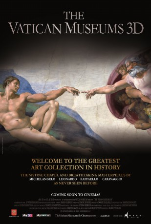

Alternativ: The Vatican Museums 3D
 
 IMDB-Wertung: 6.9 / 10
IMDB-Wertung: 6.9 / 10  Metascore:
Metascore: 
For the first time in the world, the most advanced 3D technology at the disposal of art, to live an extraordinary thrilling journey inside the Vatican Museums, narrated by Prof. Paolo Paolucci, Director of Vatican Museums. An original production by Sky Italia.
Jahr: 2014
Dauer: 65 Minuten
FSK:
Land: Italien Studio: Sunfilm EntertainmentTonspuren:
Untertitel:
Auflösung: 1080p (1920x1080) Größe: 2611 MB
Genre: Dokumentation
Regisseur: Marco Pianigiani
Drehbuch: Atlantique Productions
Soundtrack:
Darsteller:
Datei: X:\Dokumentationen\Kirche\Vatikanische Museen (2014, FSK, 1920x1080) 3D.mkv seit 14.10.2016
Festplatte: HD Serien(SU-Z)+Dokus+Musik
 Es gibt insgesamt 19 Filme in der Gruppe 'Dokumentationen\Kirche'
Es gibt insgesamt 19 Filme in der Gruppe 'Dokumentationen\Kirche'